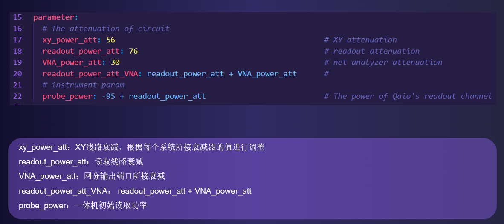

用户指南¶
这是给你的指南，你可以从这里知道怎么获取并使用pyQCat。
安装¶
我们提供了pyQCat的whl安装包，你可以直接安装到你的本地环境。
执行实验¶
pyQCat提供了丰富的实验接口，用户可以自由选择执行量子比特自动化校准及测试实验。我们以Ramsey实验为例，展示一下pyQCat执行实验的构建过程。
在执行实验之前，你必须保证：
你的Python环境中安装了pyQCat包；
你的工作环境需要正常连接一体机，且当你执行需要用到商用仪器的实验（如网络分析仪
E5071），需要保证相关仪器可以正常连接；你的工作环境需要安装mongoDB数据库，以便执行实验时记录相关操作；
定义新的Python项目，用你喜欢的名字为项目进行命名，你需要创建存放实验配置文件的目录（如config目录），同时你需要创建编辑执行实验代码的路径（如experiment包）

config目录存放配置文件信息以及量子比特状态信息，当单独执行实验时，如果你的mongoDB数据库环境为空，则需要指定配置文件目录位置，且在config路径下定义好你的配置文件，那么实验会中配置文件中加载相关实验参数，否则会从数据库中读取实验参数。上图中experiment包可以用来编写一些用来执行实验的代码，当然你可以用你喜欢的名称。我们以Ramsey实验为例，实现代码为：
from pyQCat.experiment.ramsey import Ramsey
from pyQCat.parameters import get_parameters, corrected_dc
from pyQCat.tool import qarange, remote_connection
@remote_connection("192.168.1.144") # 服务器地址
def ramsey_test(bit: int, delay_list: list, fringe: float):
inst = get_parameters("instrument")
qubit = get_parameters("qubit", bit)
compensate = get_parameters("compensate", bit)
dc = corrected_dc(6, sweet_qubit=bit)
dcm = get_parameters("dcm", bit)
ramsey_exp = Ramsey(inst, qubit, correct_dc=dc, compensate=compensate, discriminator=dcm)
ramsey_exp.run(delay_list, fringe)
if __name__ == '__main__':
delay = qarange(0, 200, 5) # 输入参数：扫描延时列表
fringe = 466.667 + 40 # 输出参数：初始fringe频率
ramsey_test(0, delay, fringe)
在执行实验的时候，你需要注意：
根据不同实验需求，定义好实验参数并传入；
你需要指定服务器地址，且保证可以正常连接，我们定义了
remote_connection注解让你实现简单快速的连接；通常实验执行过程，必须具体比特对象（qubit）、设备对象（instrument），此外可能还需要波形补偿（compensate）、DC电压（dc）和IQ分类器（dcm），你需要通过
get_parameters加载实验需要的参数，你只需要输出需要加载的对象名以及比特编号，就可以获取相应的实验参数，这些方法都定义在 parameters模块；instrument: 获取 Instrument 对象
get_parameters("instrument")qubit：获取 Qubit 对象
get_parameters("qubit", 0)compensate: 获取 PulseCorrection 对象
get_parameters("compensate", 0)dcm: 获取IQ分类器 IQdiscriminator 对象
get_parameters("dcm", 0)获取施加到比特上的dc电压：
corrected_dc()
初始化Ramsey实验，实验初始化参数我们在
pyQCat API Documents有详细的介绍；利用
run()方法启动实验，各实验所需参数我们在pyQCat API Documents有详细的介绍；
当然上述代码的前提必须保证数据库中存在你需要的信息。当数据库中不存在数据时，你需要自行指定配置文件位置，从配置文件中加载所需要的信息。

同样，我们执行其他实验还是按照一样的逻辑，如执行Rabi实验：
from pyQCat.experiment.rabi import Rabi
from pyQCat.parameters import get_parameters, corrected_dc
from pyQCat.tool import qarange, remote_connection
@remote_connection("192.168.1.103")
def rabi_test(name: str, bit: int, amp_list: list, power: float = None):
inst = get_parameters("instrument")
qubit = get_parameters("qubit", bit)
compensate = get_parameters("compensate", bit)
dc = corrected_dc(6)
dcm = get_parameters("dcm", bit)
rabi_exp = Rabi(inst, qubit, correct_dc=dc, compensate=compensate, discriminator=dcm)
rabi_exp.run(name, amp_list, drive_power=power)
print(rabi_exp.analysis.Xpi)
if __name__ == '__main__':
amp_list = qarange(0, 1, 0.02)
width_list = qarange(5, 200, 5)
rabi_test("Xpi", 0, amp_list)
rabi_test("width", 0, width_list)
执行自动化校准流程¶
利用pyQCat可以实现超导量子芯片自动化测试及校准流程，而你只需要进行很简单的配置就可以实现丰富的功能，我们提供了两种形式实现自动化测试及校准流程。
yaml文件形式¶
利用ymal配置文件形式实现自动化校准流程时，我们需要自定义配置文件(如exp.yaml)，同时需要配置个比特的通道参数(bit_channel.csv)和仪器地址(condif.ni)
配置文件：
bit_channel.csv中定义了每个比特的XY通道、DC通道、Z通道、读取通道、初始读取频率、采样延时和采样带宽；

condif.ini中定义了商用仪器的地址

exp.yaml中定义了执行自动化校准的流程，你可以通过更改此文件中的内容灵活更改实验流程

代码实现：
from pyQCat.flow.qtp import qtp
if __name__ == '__main__':
path = r"E:\PythonProject\pyQCatDemo\config\exp.yaml"
qtp(yaml_path=path)
yaml文件说明：
我们在yaml文件中定义了四个部分，分别为system、parameter、flows和experiments。
system 模块的基本配置:
parameter 模块的基本配置:

flow 模块的基本配置:
experiments 模块的基本配置:
界面GUI执行流程¶
在yaml配置文件的启动方式之外，我们额外新增了界面GUI执行自动化校准流程的功能，你只需要实现下面简单的代码即可
from pyQCat.tool.gui.mainGui import QMyGui
if __name__ == '__main__':
yaml = r'E:\PythonProject\pyQCatDemo\config\exp.yaml'
QMyGui.run_gui(yaml)
执行上面的代码，你需要注意：
必须提前在配置文件目录中定义好标准的exp.yaml文件，并给出文件路径，界面演示如下：


配置文件介绍¶
在pyQCat中，有下面一些常见的配置文件，他们都可以各自的作用，具体可见下图；